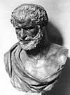

Antik Yunan filozofları arasındaki en önemli tartışma konularından biri de maddeleri oluşturan asıl elementin ne olduğuydu. Thales (MÖ 620-546) gibi kimi filozoflara göre evrendeki maddelerin temel kaynağı suydu. Anaximenes’in (MÖ 585-528) başını çektiği bazılarına göreyse temel element havaydı.

Efesli zengin bir aristokrat olan Heraklit’e (MÖ 540-480) göreyse temel element ateşti. İronik bir biçimde Heraklit’in yazdıkları yurttaşları tarafından büyük bir düşmanlıkla karşılanmış ve eserleri ateşte yakılmıştır. Heraklit ateşin doğanın temel yapıtaşı olduğuna inanıyordu. Ona göre tüm diğer maddeler ondan türemişti.
Heraklit’in yaşamı hakkında pek az şey biliyoruz. Bugüne kadar gelebilen çalışmalarından diğer Yunanlıları, özellikle de günümüzde Türkiye sınırları içerisinde kalan zengin liman kenti Efes’te yaşayan komşularını küçümsediği anlaşılmaktadır. (Bir yazısında hemşehrilerinden bahsederken “Efes’in yetişkin erkekleri kendilerini asmak için ellerinden ne gelirse yaparlar” demektedir).
Heraklit evrenin oluşumu ile ilgili tartışmaların önemli felsefi sonuçları olduğuna inanmaktadır. Ona göre dünya ateşten yapılmıştır ve bu yüzden de sürekli değişmektedir. Dünyanın sürekli bir akış halinde olduğu düşüncesi, onun felsefesinin en temel noktalarından birisini oluşturmaktadır.
“Dünya” diye yazar “yaşayan bir ateştir.” Değişmeyen yegane şeyin değişim olduğunu düşünür. Bu fikir onu diğer Antik Yunan filozofları ile karşı karşıya getirecektir. Zira pek çokları mutlak gerçeğin arayışındadır. Değişimin kaçınılmaz ve sürekli olduğuna inandığı için insanların kendi kendilerini yönetemeyeceğini ve katı kurallarla doğru yöne sevkedilmeleri gerektiğini ileri sürmüştür. “Eşeklerin gözü altında değil samandadır,” diye yazmış ve insanların iyi şeyler yapmaları için sürekli dürtülmeleri gerektiğini ileri sürmüştür.
Hayatının son yıllarını çeşitli şifalı otlar ve çimen yiyerek ve insanlardan kaçarak geçiren Heraklit 60 yaşında ölmüştür. Ne var ki çalışmaları, aralarında Platon’un (MÖ 429-347) da bulunduğu kendinden sonraki filozoflara ölümünden sonra da meydan okumaya devam etmiştir. Nitekim geleceğin filozofları Heraklit’in teorilerinin yanlışlığını ispat etmek için büyük bir çaba harcayacaktır.
Elementler meselesinde ise en sonunda bir uzlaşma sağlanmış ve evrenin dört temel elementten oluştuğu iddia edilmiştir: toprak, su, hava ve ateş. Bu düşünce modern kimyanın ortaya çıktığı zamana kadar yüzyıllar boyunca hakimiyetini korumuştur.
Ek Bilgiler
1- Artemis Tapınağı Efes’te bulunmaktaydı. Yaklaşık olarak MÖ 550 yılında tamamlanan tapınak antik dünyanın yedi harikası arasında yer almaktadır.
2- Heraklit zaman zaman “Anlaşılmaz” lakabıyla anılmaktadır. Bunun nedeni yazım tarzının fazla karmaşık olmasıdır.
3- Heraklit Antik Yunan şairi Homeros’u çok sert eleştirmiştir. Öyle ki “Odysseia ve İlyada’yı yazdığı için dayağı hak etmiştir,” diye yazar.